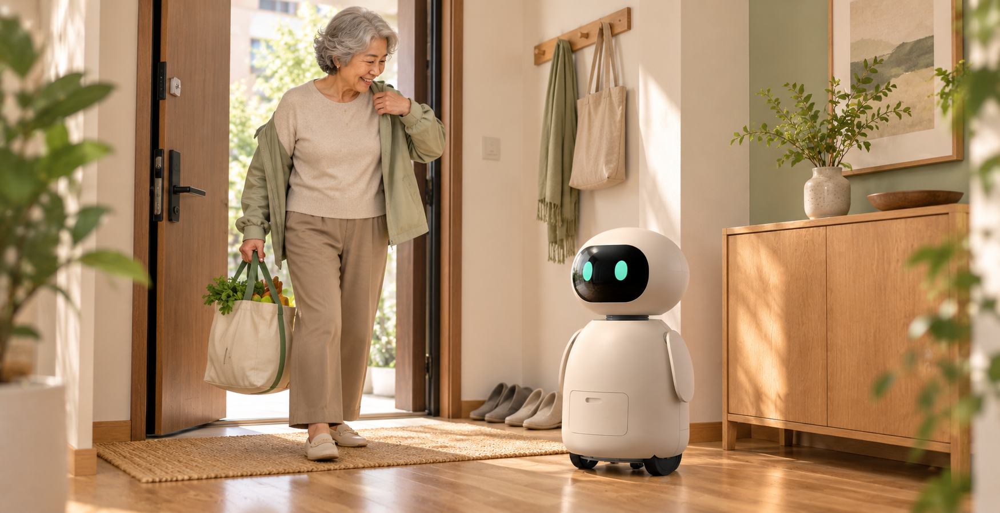
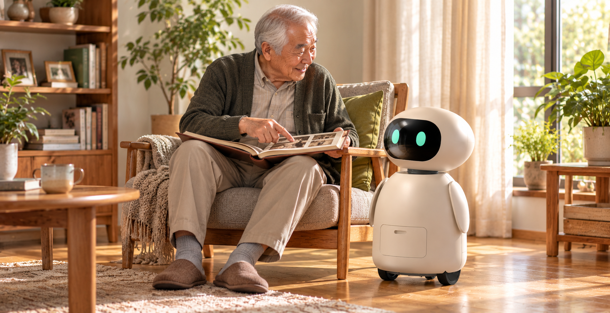
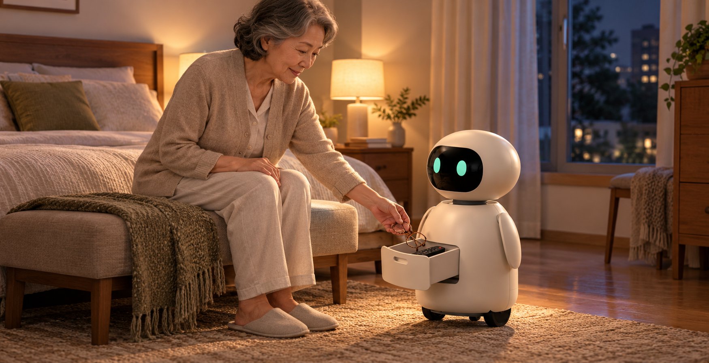

01 / 回到家里
推开门，
有熟悉的小伙伴。
散步、买菜，再回到家。我们希望团团能成为愿意打个招呼的存在，让陪伴跟着熟悉的生活节奏发生。
期望交互：日常语音陪伴
阶段：使用构想，待原型验证

Everyday company / 独居日常的使用构想
进门时的一个招呼，午后的一段旧事，睡前顺手收好的小物。
我们从这些真实而具体的时刻，探索团团可以怎样融入居家生活。
01 / 回到家里
散步、买菜，再回到家。我们希望团团能成为愿意打个招呼的存在，让陪伴跟着熟悉的生活节奏发生。
期望交互：日常语音陪伴
阶段：使用构想，待原型验证

02 / 午后的故事
一杯茶、一本旧相册，都是值得分享的日常。围绕熟悉的话题，继续探索更自然、更愿意持续使用的陪伴交互。
期望交互：情感陪伴
阶段：使用构想，待原型验证

03 / 准备休息
把眼镜、遥控器放回熟悉的位置。在已有的抽屉结构概念上，验证取放是否方便、动作是否自然，以及是否符合老人的使用习惯。
结构基础：前置抽屉与底部双导轨
阶段：已三维建模，待实物体验验证

以上为 AI 生成的使用场景构想。日常语音、事项提醒、基础姿态识别与家属联络流程仍需随软硬件原型逐项开发、验证。
Connecting care / 连接家庭两端
242 份问卷让我们看到，陪伴与提醒之外，老人也需要在异常时及时联系家人。我们计划把基础姿态信息、提醒和家属联络机制连接起来，验证一个双方都能理解、愿意使用的陪伴入口。
从熟悉的生活节奏出发，关注交互是否容易理解、操作是否顺手，以及是否愿意持续使用。
探索可协同的关怀方式，逐步明确异常情境中的联络触发、确认与沟通流程。